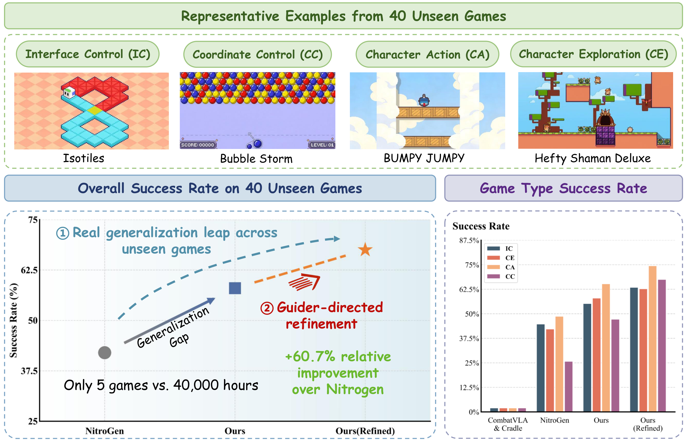
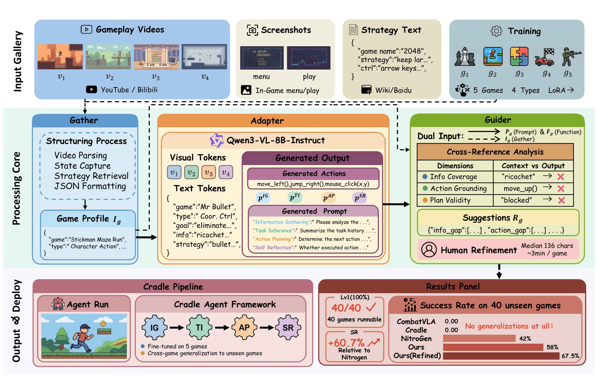
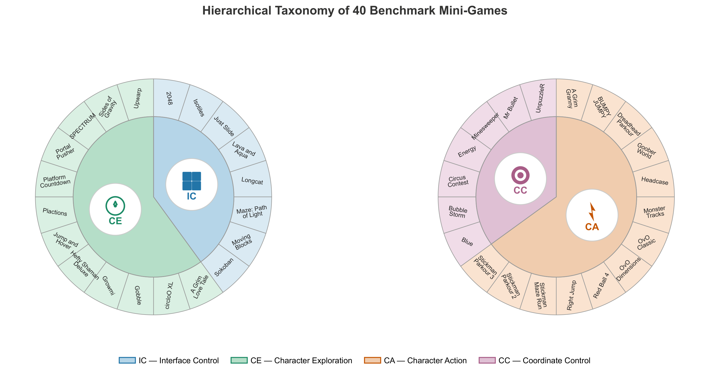
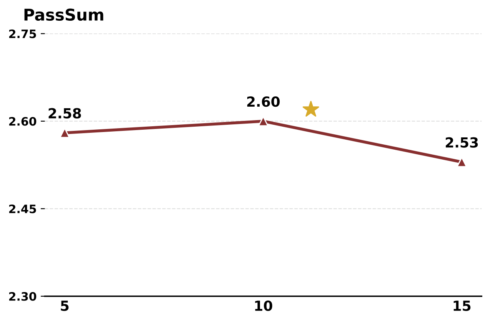
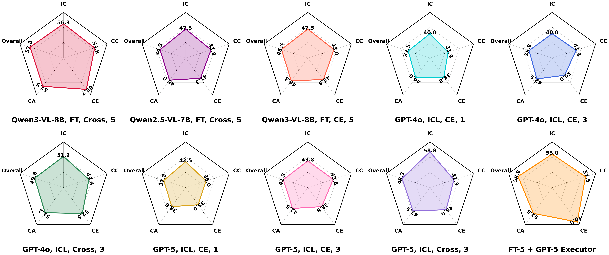
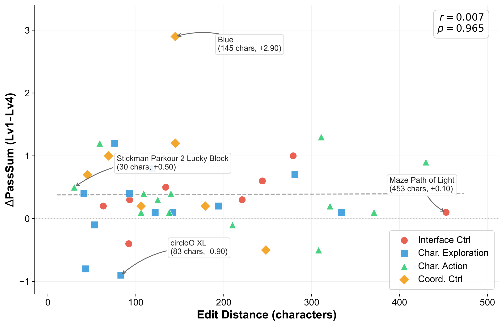
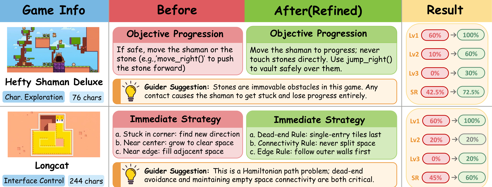

Vision-language model (VLM) driven game agents have shown strong performance in specific games, yet existing frameworks require extensive manual crafting of game-specific prompts and action functions. This reliance results in near-zero cross-game generalization. Therefore, we propose PlayAnything, a plug-and-play multimodal prompt adaptation framework that enables VLM agents to generalize to diverse, unseen games. By combining automatic prompt generation with guided non-expert refinement, PlayAnything reduces deployment effort from hours of expert programming to a streamlined human-AI collaborative pipeline.
Specifically, PlayAnything consists of three complementary modules: i) Gather, a multimodal retriever that constructs structured game profiles from gameplay videos, screenshots, and strategy texts; ii) Adapter, a core module fine-tuned on Qwen3-VL-8B that transforms these profiles into executable prompts and action functions; and iii) Guider, a post-generation verification module that cross-references outputs with raw profiles to provide targeted improvement suggestions for human users.
Experiments demonstrate that PlayAnything, trained on only 5 games, achieves 100% runnability and an average success rate of 58% across 40 unseen games. This drastically outperforms existing baselines—where Cradle and CombatVLA score 0%, and the massive NitroGen reaches only 42%—achieving superior generalization with orders-of-magnitude less training data (5 games vs. 40,000 hours). Furthermore, with Guider-directed refinement requiring a median of only 136 character edits, the average success rate further rises to 67.5%, peaking at 92% on Level 2 tasks.
Existing VLM-based game agents face a critical generalization bottleneck:
Our key insight is inspired by how human players learn new games: they watch gameplay trailers, read descriptions, study controls, and then begin to play. PlayAnything automates this watch-read-play cognitive paradigm by learning to map multimodal game information to executable agent configurations.

Per-type generalization comparison across four game types. Each panel shows representative games and the Avg. SR of five methods. PlayAnything is the only method that achieves strong performance across all game types, including Coordinate Control where NitroGen fails due to its gamepad-only action space.

Overview of the PlayAnything framework. 1) Gather retrieves multimodal game information and constructs a structured game profile. 2) Adapter, fine-tuned on only 5 training games, transforms the profile into all prompts and action functions required by the Cradle agent framework. 3) Guider then verifies outputs of the Adapter against the original game profile and produces targeted improvement suggestions for human-AI collaborative refinement.
Retrieves gameplay videos, screenshots, and strategy texts from external sources (YouTube, Bilibili, Wiki) and constructs structured game profiles via a fully automated pipeline using yt-dlp, Playwright, and Crawl4AI.
Fine-tuned on Qwen3-VL-8B-Instruct with only 5 training games. Transforms multimodal game profiles into structured JSON prompts and Python action functions for the 4 core modules of the Cradle agent framework.
Performs cross-reference coverage analysis between Adapter outputs and raw game profiles, identifying information gaps and action space omissions. Outputs structured improvement suggestions for efficient human refinement.
We construct a multimodal game benchmark spanning 4 types and 45 games (5 train + 40 test), the largest evaluation scale of its kind (4x the scale of NitroGen's 10-game evaluation). Our taxonomy is based on input device + game pace, yielding four mutually exclusive control types:

Hierarchical taxonomy of the 45-game benchmark across 4 game types.
| Control Type | #Test | Input | Example Games |
|---|---|---|---|
| Interface Control | 8 | Keyboard (grid/board) | 2048, Sokoban, Longcat, Isotiles |
| Character Exploration | 12 | Keyboard (character) | SPECTRUM, Growmi, Hefty Shaman Deluxe |
| Character Action | 13 | Keyboard (fast action) | OvO Classic, Dreadhead Parkour, Red Ball 4 |
| Coordinate Control | 7 | Mouse click (x,y) | Mr Bullet, Minesweeper, Bubble Storm |
Training set (5 games): Mowing Mazes (IC), Typing Fighter (IC), Fireboy & Watergirl (CE), Lands of Blight (CA), Bubble Shooter (CC) — covering all 4 control types with balanced representation.
We evaluate PlayAnything on 40 unseen games, each independently run 10 times. SR1 to SR4 denote the success rates of progressively harder levels, while Avg. SR represents the mean success rate across all four levels.
| Method | SR1 (%) | SR2 (%) | SR3 (%) | SR4 (%) | Avg. SR (%) |
|---|---|---|---|---|---|
| Cradle | 0.0 | 0.0 | 0.0 | 0.0 | 0.0 |
| CombatVLA | 0.0 | 0.0 | 0.0 | 0.0 | 0.0 |
| NitroGen | 100.0 | 49.0 | 16.0 | 3.0 | 42.0 |
| Ours | 100.0 | 81.0 | 40.0 | 11.0 | 58.0 |
| Ours (Refined) | 100.0 | 92.0 | 55.0 | 23.0 | 67.5 |
Key Findings:
Statistical rigor: Wilcoxon signed-rank tests yield p=1.04×10-6 (Ours > NitroGen) and p=1.19×10-7 (Ours (Refined) > NitroGen), with non-overlapping 95% confidence intervals.
| Game Category | Method | SR1 | SR2 | SR3 | SR4 | Avg. SR (%) | Edit Dist. |
|---|---|---|---|---|---|---|---|
| Interface Control (8) | NitroGen | 100.0 | 59.0 | 18.0 | 2.0 | 44.8 | — |
| Ours | 100.0 | 77.0 | 38.0 | 6.0 | 55.3 | — | |
| Ours (Refined) | 100.0 | 90.0 | 49.0 | 15.0 | 63.5 | 197 | |
| Char. Exploration (12) | NitroGen | 100.0 | 50.0 | 14.0 | 5.0 | 42.3 | — |
| Ours | 100.0 | 87.0 | 38.0 | 8.0 | 58.3 | — | |
| Ours (Refined) | 100.0 | 91.0 | 44.0 | 16.0 | 62.8 | 132 | |
| Char. Action (13) | NitroGen | 100.0 | 66.0 | 25.0 | 5.0 | 49.0 | — |
| Ours | 100.0 | 91.0 | 53.0 | 17.0 | 65.3 | — | |
| Ours (Refined) | 100.0 | 99.0 | 68.0 | 32.0 | 74.8 | 204 | |
| Coord. Control (7) | NitroGen | 100.0 | 3.0 | 0.0 | 0.0 | 25.8 | — |
| Ours | 100.0 | 59.0 | 23.0 | 7.0 | 47.3 | — | |
| Ours (Refined) | 100.0 | 81.0 | 60.0 | 29.0 | 67.5 | 134 |
Character Action achieves the best automated results (SR2 = 91%) due to regular action spaces. Coordinate Control benefits most from refinement and highlights the most dramatic baseline failure: NitroGen achieves only 3% SR2 due to its gamepad-only action space, while PlayAnything adaptively grounds interaction logic in visual coordinates.

| # Train | SR1 | SR2 | SR3 | SR4 | Avg. SR |
|---|---|---|---|---|---|
| 5 | 100 | 80 | 34 | 18 | 58% |
| 10 | 100 | 78 | 38 | 16 | 58% |
| 15 | 100 | 73 | 35 | 15 | 56% |
Balanced type coverage matters more than raw data volume. Performance plateaus at 5 games and degrades at 15 due to imbalanced distribution.
| Configuration | Avg. SR (%) |
|---|---|
| Qwen3-VL-8B Cross (FT) | 57.8 |
| GPT-4o 3-shot ICL (Cross) | 49.8 |
| GPT-5 3-shot ICL (Cross) | 48.3 |
| Qwen3-VL-8B CE-only (FT) | 45.5 |
| Qwen2.5-VL-7B Cross (FT) | 44.3 |
Fine-tuned 8B VLM outperforms GPT-4o and GPT-5 ICL baselines. GPT-5 suffers from "over-thinking" with excessive edge-case handling.

Performance radar maps of 10 system configurations across four game types (IC, CE, CA, CC). Fine-tuned open-source models demonstrate superior, balanced generalization compared to proprietary ICL baselines.
Across 40 test games, the median Edit Distance is only 136 characters (min=30, max=453). The Pearson correlation between edit magnitude and performance gain is r=0.007 (p=0.965), demonstrating that edit direction matters far more than edit magnitude. For example, the smallest refinement (Stickman Parkour 2: 30 chars) yields significant gains, while the most extensive modification (Maze: Path of Light: 453 chars) contributes only marginal improvement.

Scatter plot of edit distance vs. performance gain across 40 test games. The near-zero correlation (r=0.007) confirms that precision of edits matters far more than their magnitude.

Qualitative comparison of Guider-directed refinement on two diverse games. "Chars" denotes the Levenshtein edit distance between the unedited and refined prompts.
The Guider identifies targeted improvement opportunities, enabling two distinct refinement modes:
Game: Hefty Shaman Deluxe (Character Exploration)
Issue: Adapter assumed stones could be pushed via move_right()
Guider fix: "Stones are immovable obstacles; contact causes the shaman to get stuck"
Edit: 76 characters
Result: Avg. SR 42.5% → 72.5% (+30%)
Game: Longcat (Interface Control)
Issue: Adapter produced vague positional heuristics
Guider fix: Recognized underlying Hamiltonian path structure; suggested dead-end avoidance and connectivity maintenance
Edit: 244 characters
Result: Avg. SR 45.0% → 60.0% (+15%)
@inproceedings{liu2026playanything,
title={PlayAnything: Enabling Cross-Game Agent Generalization via Multimodal Prompt Adaptation},
author={Fei Liu},
booktitle={ACM International Conference on Multimedia (MM)},
year={2026}
}